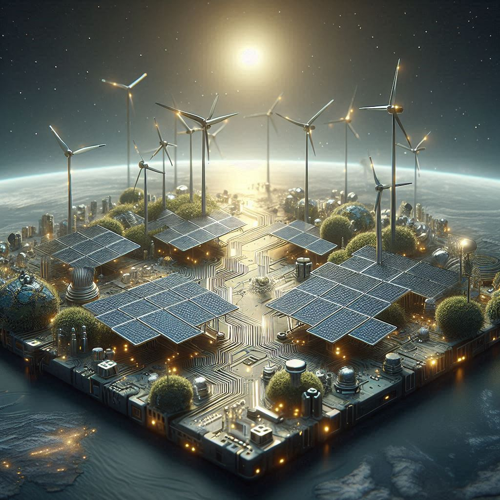
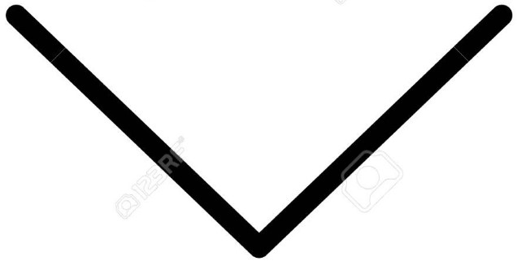

ATRAVÉS DO DESCARTE CONSCIENTE, TRANSFORME SEU LIXO ELETROELETRÔNICO EM COMPONENTES PARA NOVOS EQUIPAMENTOS
Somos estudantes desenvolvedores de programação de sistemas, participando do curso "Além de Jogar, Eu faço Jogos", do projeto da ONG CPDI - CRIANDO PONTES DIGITAIS INCLUSIVAS, patrocinado pela COOPERFORT. O PROGRAMA RECICLATEC - Logística Reversa de Eletroeletrônicos. A ONG CPDI, em parceria com a Weee.do (da sigla em inglês Wast Eletrical and Eletronic Equipment), mobilizaram uma forma de destinar "lixo eletroeletrônico" através de uma gincana entre os alunos do curso para arrecadar e descartar de forma consciente e educativa estes materiais. Para que isto funcione, a Weee.do têm uma operação estruturada, viabilizando a logística reversa dos seus resíduos eletroeletrônicos de forma segura, eficiente transparente e em conformidade com as leis e as normas vigentes.Estrutura com mais de 100 de Pontos de Entrega Voluntária (PEV) criada para fomentar a logística reversa do “lixo eletrônico” e assegurar sua destinação ambientalmente adequada.
Conheça a WEEE.DO e Encontre um local (Pev.do) para descartar seu eletroeletrônico Conheça a ONG CPDIMissão/Valores
O trabalho da logística reversa de eletroeletrônicos requer constante atenção devido à importância ambiental, social e econômica dos resíduos eletrônicos. Para seguirmos com nossa missão, temos muito claro os valores que regem nossa trajetória.Queremos ensinar e conscientizar as pessoas sobre a captação, processamento e gestão de resíduos eletroeletrônicos que se tornaram sucata, lixo. Oferecer soluções, através da Weee.do, para logística reversa de eletroeletrônicos com qualidade, segurança e viabilidade econômica, protegendo o meio ambiente e fortalecendo ações sociais.
- Proteção da Natureza
- Sustentabilidade econômica, ambiental e social
- Responsabilidade e comprometimento
- Gerar valor para clientes e sociedade
- Ambiente de trabalho harmônico e produtivo
- AEficiência com simplicidade
- Relacionamentos baseado na transparência e confiança entre as partes
Visão
Além de informar às pessos sobre a importância do consumo e descarte de eletroeletrônicos,queremos ser profissionais reconhecidos pela forma de estudo e trabalho consciente, sustentável e ecológicamente corretos, buscando caminhos possíveis e alcançáveis para realizarmos nossas metas alcançando nossos objetivos com respeito às pessoas, à natureza e ao planeta.
Dúvidas Frequentes:
E quanto as memórias e dados que possam estar em algum equipamento descartado?
Destruição de dados 100% segura no processo de destinação de eletrônicos. Quanto à destruição, os dispositivos descartados possuem dados, muitas vezes sigilosos. A weee.do garante a completa exclusão de dados através do uso de boas práticas e softwares de destruição de dados..
Por que minha empresa deve realizar a correta destinação dos resíduos sólidos?
Sua empresa estará em conformidade com a legislação vigente. Ajudará pessoas através de projetos sociais apoiados pela weee.do e ONG CPDI. Agregará valor ambiental à sua marca perante seus clientes. Reduzirá o impacto gerado pelo consumo de eletroeletrônicos.
Onde posso encontrar local para descarte?
Nos locais que possuem Pev.do, uma estrutura de Pontos de Entrega Voluntária (PEV) criada para fomentar a logística reversa do “lixo eletrônico” e assegurar sua destinação ambientalmente adequada. No tópico "Quem somos" clique em "Conheça a WEEE.DO e Encontre um local (Pev.do) para descartar seu eletroeletrônico" e encontre no mapa o local mais próximo para o descarte.
Quem são os DESENVOLVEDORES deste FLYER educativo?
Grupo 6 - Nome da Equipe: CIRCUITO SUSTENTÁVEL - DESENVOLVEDORES Integrantes da Equipe: Diego Lima, Leandro Fontes, Mariana Melo, Mariana Silva, Rony Gomes, Vitor Santos.